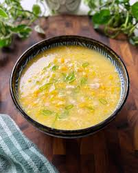

Corn Soup Recipe
Home

Description
Here we will go through everything you need to make Papa's Corn Soup
Ingredients:
- 1 can cream style corn
- 1 can low sodium chicken broth
- 1 tablepoon cornstarch
- 2 tablespoons water
- large egg, beaten
Steps:
- Combine corn and chicken broth in a saucepan. Bring to a boil over medium-high heat.
- Mix together cornstarch and water in a small bowl or cup; pour into the boiling corn soup, and continue cooking for about 2 minutes, or until thickened.
- Gradually add beaten egg while stirring the soup. Remove from heat and serve.